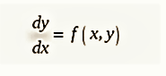
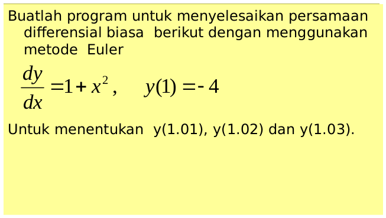

Methode Euler
Dalam matematika dan ilmu komputasi , metode Euler (juga disebut metode forward Euler ) adalah prosedur numerik orde pertama untuk menyelesaikan persamaan diferensial biasa (ODE) dengan nilai awal yang diberikan. Ini adalah metode eksplisit paling dasar untuk integrasi numerik persamaan diferensial biasa dan merupakan metode Runge-Kutta paling sederhana. Metode Euler dinamai Leonhard Euler , yang memperlakukannya dalam bukunya Institutionum calculi integralis (diterbitkan 1768-1870). [1]
Metode Euler adalah metode urutan pertama, yang berarti bahwa kesalahan lokal (kesalahan per langkah) sebanding dengan kuadrat ukuran langkah, dan kesalahan global (kesalahan pada waktu tertentu) sebanding dengan ukuran langkah. Metode Euler sering berfungsi sebagai dasar untuk membangun metode yang lebih kompleks, misalnya, metode prediktor-korektor .
Persamaan diferensial yang terdiri dari satu variabel bebas dinamakan persamaan diferensial parsial biasa (ODE). sementara itu, persamaan diferensial yang terdiri dari dua atau lebih variabel bebas dinamakan persamaan diferensial parsial Persamaan Diferensial - PDE). (ODE) memiliki bentik umum yaitu:

Contoh soal

Code Program dengan Python
print("f(x,y)=1+x^2")
print("yi+1 = y1 + hf(xi+yi)")
x1 = float(input("Masukkan x1= "))
x2 = float(input("Masukkan x2= "))
h = 1.01-x1 #Langsung saya atur sendiri karena yang dicari f(x,y) nilai x-nya=1.01
n=4 #jumlah x ada 4 yaitu 1, 1.01, 1.02, 1.03
xi = -4
hasil = xi
y=0
for i in range(n):
print("hasil dari y"+str(i)+"= "+ str(hasil))
hasil = xi + h*(1+(x1+y)**2)
y+=h
xi=hasil
pada bagian pertama terdapat variable x1 adalah x awal dan x2 merupakan x akhir. karena di soal terdapat nx=3 yaitu x0=1, x1=1,01, x3=1,02 x2=1,03 maka h= xn-x0/n, hasilnya h = 0.01.
xi adalah hasil awal yang kemudian akan dimasukkan pada prosess iterasi. Karena rumus eurel adalah y1 = y0 +h(f(x,y)) maka rumus barunya adalah y1=y0+h(1+x^2). variable y digunakan untuk penambahan nilai x agar selalu bertambah 0.01.
<script type="text/x-mathjax-config">
MathJax.Hub.Config({
tex2jax: {inlineMath: [['$$','$$'],['$','$']]}
});
</script>
<script type="text/javascript" async
src="https://cdn.mathjax.org/mathjax/latest/MathJax.js?config=TeX-MML-AM_CHTML">
</script>